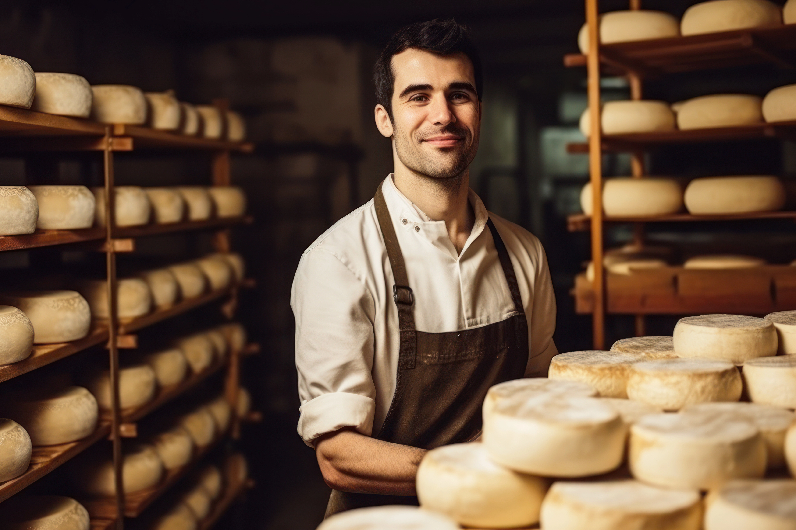
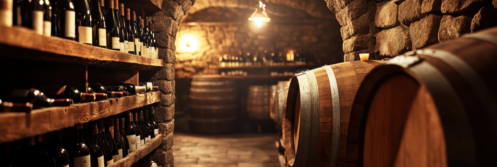
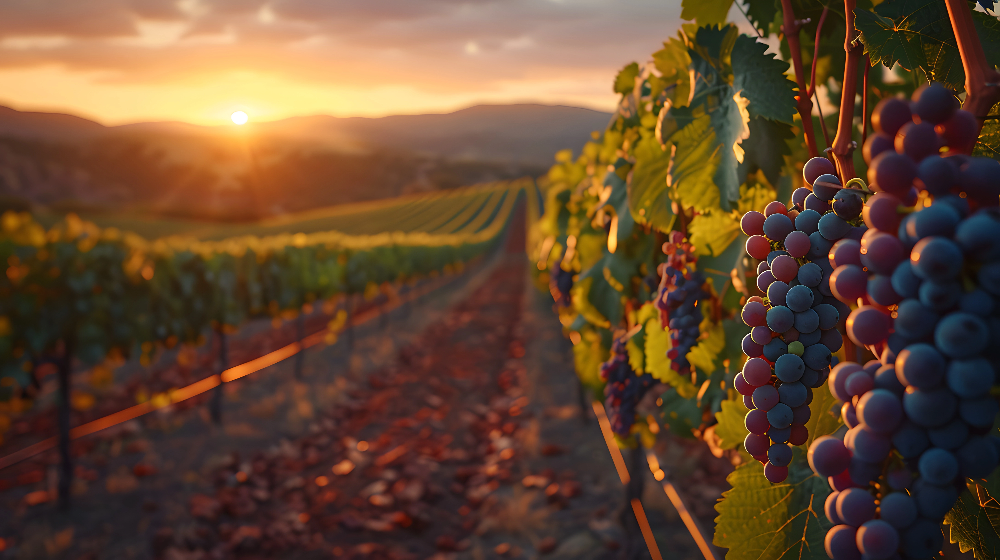
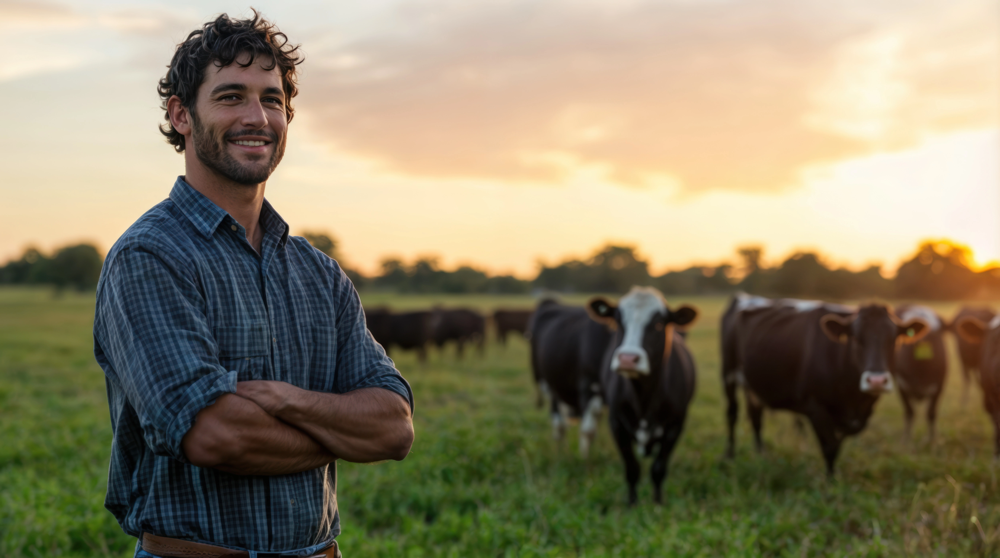
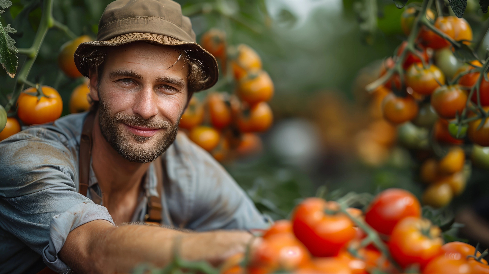
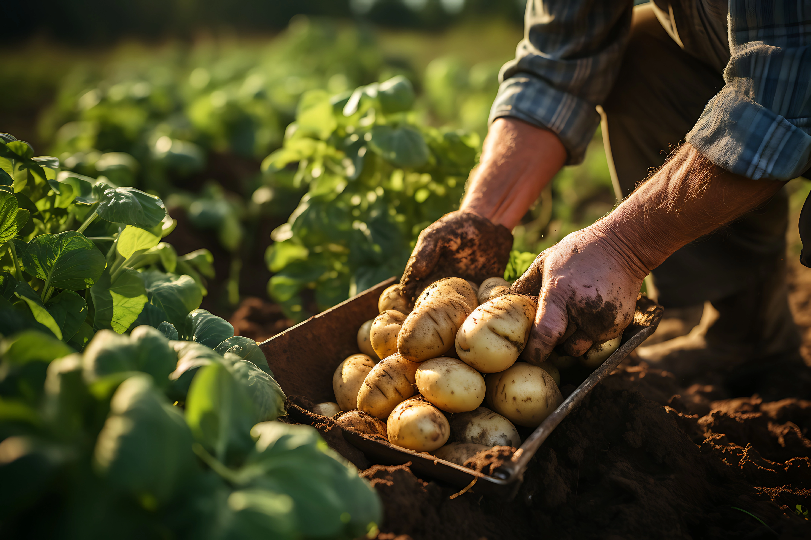
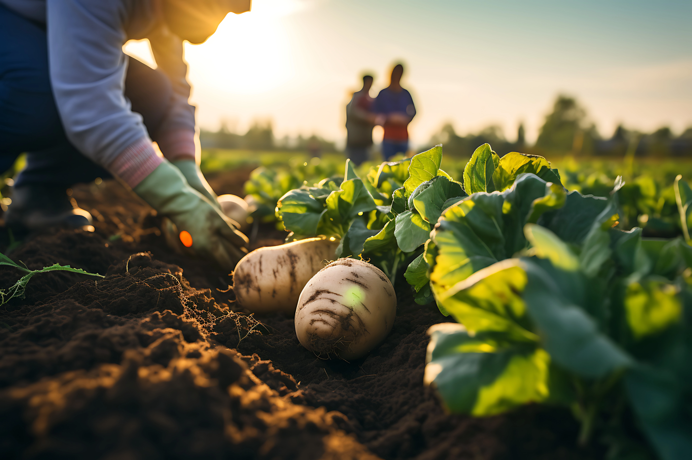

Nos partenaires
Des producteurs locaux qui partagent nos valeurs : qualité, terroir et respect de la nature. Chaque assiette raconte leur savoir-faire.
Fromagers d'Auvergne
Saint-Nectaire, Cantal, Fourme d'Ambert… Nous travaillons avec des affineurs et producteurs fromagers du Massif central pour des plateaux 100 % locaux.



Vignerons & caves
Côtes d'Auvergne, Saint-Pourçain, Côtes du Forez… Notre carte des vins met à l'honneur les domaines et caves coopératives de la région.



Éleveurs
Viandes fermières, charcuteries et vaches laitières d'Auvergne : nous nous approvisionnons auprès d'éleveurs engagés pour une viande de qualité, du lait et des recettes du terroir.



Maraîchers & primeurs
Légumes de saison, fruits du verger, herbes aromatiques… Nos maraîchers bio et primeurs nous fournissent chaque semaine des produits frais et de proximité.


